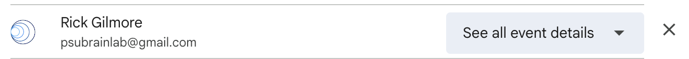

3 Onboarding
The lab uses a number of tools. This section describes them.
Asana
Asana is used for task management in the lab.
Sign up for an account
- Go to the Log in page
- Pick
Sign Upat the bottom of the window
Emailthe lab manager with your name associated email address so they may add you to the Gilmore Lab space
Discord
Please accept the invitation to our server ‘Gilmore Lab’:
You may be asked to create your account first. If so, follow these steps:
- Open your web browser and register for a Discord Account.
- Fill out the information including your email address, username, and password. - Once you fill out the required information, click on
Continue. - You have now successfully created your Discord Account.
- You need to verify your email address before you can fully use your Discord account.
- Go to your email and open the email from Discord.
- Click on
Verify Emailbox to verify your email account.
Start using Discord
- Login
- Go to
Settings
![Discord Settings Icon][include/img/discord-settings.png]
- Now you can ensure you receive notifications related to discord.
![Discord Notifications][include/img/discord-notifications.png]
DataCamp
DataCamp is used for learning the basics in R
The Lab Manager will send an invitation to your PSU email address to join DataCamp.
Please check your PSU email and accept the invitation email to the Psych 494 Research Studies Class
If you do not already have an account on DataCamp, please create one.
- go to DataCamp
- enter your PSU email address and create a password
Google Calendar
Create a Google calendar including anything that you have on a regular basis (e.g. classes/weekly meetings)
Things you need to know:
You will need to make each class in your schedule a recurring event so it propagates for the whole semester.
Share this calendar with the lab email with
See all event details

After the lab manager receives all calendars for the semester, the weekly meeting time will be determined. This meeting time will then be sent out via a google calendar invitation.
GitHub
Please accept the invitation email the lab manager sent to your PSU email account to be added to our Git Repository. I believe you will be asked to create a username, enter your email and create a password at this time.
RStudio
On the web
Connect RStudio to Git/GitHub
HappyGit and GitHub for the useR is the BEST instruction manual with ALL of the nitty gritty details! However I am going to provide a short version with some more screenshots here.
The general steps are:
- download R - download RStudio - download Git - connect RStudio and Git/GitHub
Mac
Download R

Download R Studio
Download Git
Windows
Download R
Go to https://posit.co/download/rstudio-desktop/
Click the button for DOWNLOAD AND INSTALL R
This should take you to https://cloud.r-project.org/
Click on the link Download R for Windows

Click on the link install R for the first time
Click on the link Download R-4.2.3 for Windows (or whatever is the most recent version of R listed)

Then open the downloaded .exe file to install
Choose Next to install into the default folder

Download R Studio
Go to https://posit.co/download/rstudio-desktop/
Click the button for DOWNLOAD RSTUDIO DESKTOP FOR WINDOWS (I think this button changes based upon the computer you are on - check on Mac)
Click on the downloaded .exe file to begin installing RStudio
(I don’t have screenshots of this process for windows)
Download Git
There are 15 different screens during the installation process for Windows.